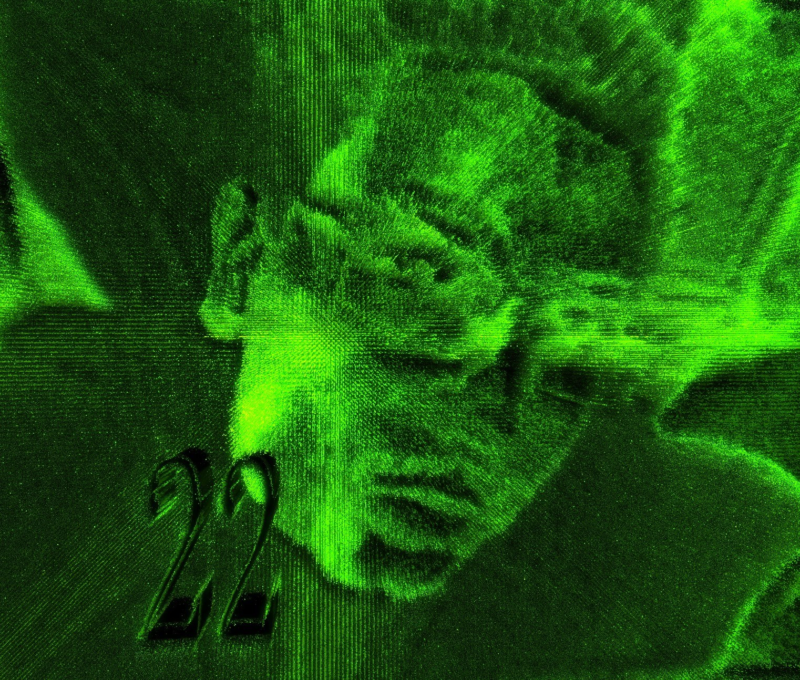

| track | listen | lyrics |
|---|---|---|
|
|
i ya zakryl svoi glaza — veko tyazhelej lyustry
i plotnyj sint udarom groma b'et po taktu rovno
moi resnicy tak dlinny veerom pryachut vzor
eto grustnyj trek, no mne ne grustno
eto grustnyj trek, no mne ne grustno |
|
|
 ghost |
prizrachnyj strannik v carstve tenej odinok
i ya hochu krichat, chtoby pochuvstvovat tishinu, pobyt odnomu
i chasto vizhu v golove eti kartiny
potom kozha iskritsya zolotom, kak znamenie Godfri
teper gonyu na skakune fantomnom |
|
|
|
mozhet i pravda luchshe prosto poverit?
a chto tam na moej karte natalnoj?
no esli chestno, ya ne mogu poverit'
ya nikogda ni vo chto ne veril
nas na bal priglasili, tak, v roli gostya
neuzhto zvezdy pravda vstali radi nas tak? |